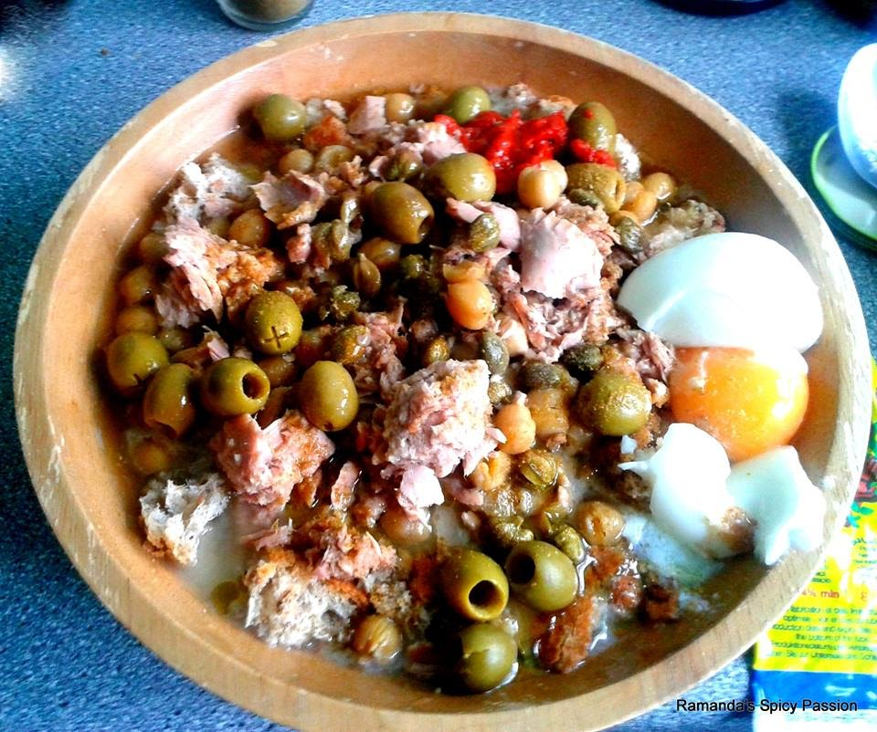

Home
Lablabi

Description
Lablabi is a traditional Tunisian chickpea soup that is often enjoyed as a hearty and warming dish. It's
typically seasoned with cumin, garlic, and harissa, and served over pieces of stale bread.
Ingredients
- 2 cups of dried chickpeas (soaked overnight)
- 4-5 cloves of garlic (minced)
- 1 teaspoon of ground cumin
- 2 tablespoons of harissa (adjust to taste)
- 4 cups of water or broth
- Stale bread (cut into pieces)
- Olive oil
- Lemon wedges
- Salt and pepper to taste
Steps
- In a large pot, cook the soaked chickpeas with minced garlic, ground cumin, and water or broth until the
chickpeas are tender.
- Season with harissa, salt, and pepper.
- Place pieces of stale bread in bowls.
- Pour the hot chickpea soup over the bread.
- Drizzle with olive oil and serve with lemon wedges.
If you like this recipe, please star the repo on GitHub
Learn to code with The Odin Project